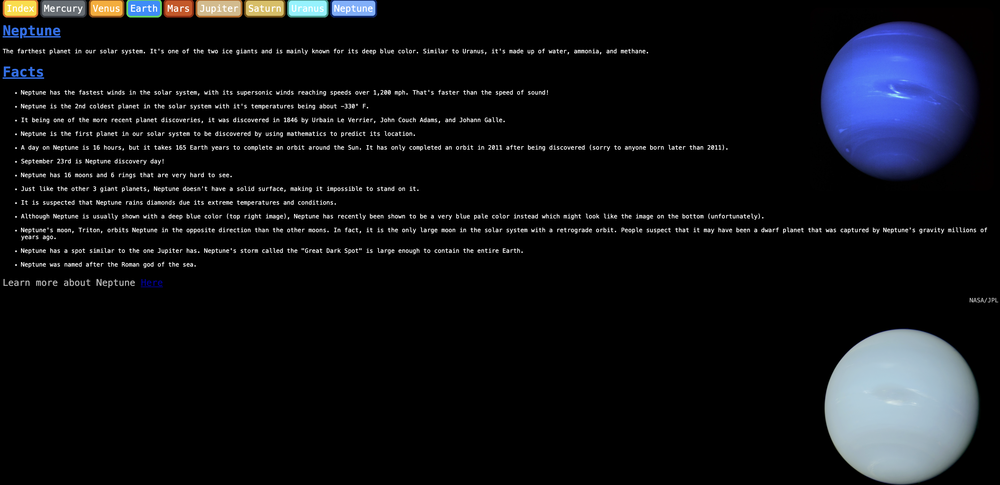

My two best works are my Unit 6 Project and my Unit 2 Project. I like how I was able to express my passion about space in both of these projects because it allowed me to show and share interesting facts about planets. I put a lot of time and effort into making sure that these projects look good and I had fun doing them. Seeing how they looked at the end after much hard work made me feel like I achieved something. I was able to use my knowledge in computer science and space to do these projects, however I was able to expand my knowledge in both of these fields from solving problems I had with the code and doing research about space. Things like having to add 8 pages and links to my website as well as figure out how to make the arcs look like rings for my image made it take some time for me to complete these projects, however they were not that difficult to do.
